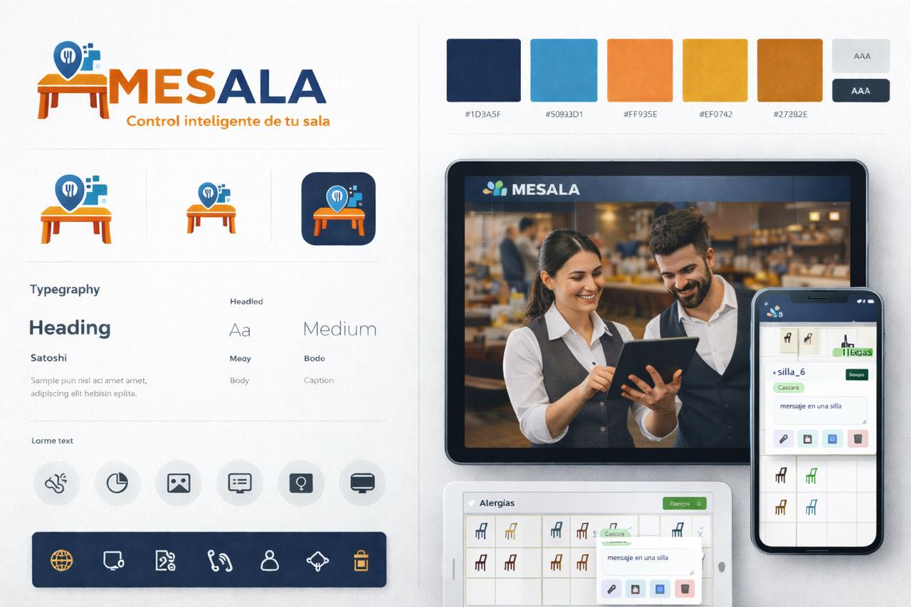

Todo lo que necesitas, en un solo lugar
Diseñado por y para profesionales de la hostelería. Hemos pensado en cada detalle para que tú solo te preocupes de cocinar.
Gestión de Sala
Total flexibilidad ante imprevistos de última hora, guarda tus plantillas de salones habituales. Realiza las reservas y asigna notas particulares por voz o texto.

Menú Digital Interactivo
Los ojos del negocio, gestiona alérgenos y notas especiales al instante, es la memoria del camarero. Sin HardWare adicional. Suma.

Fidelización de Clientes
Lo puedes usar con tu smartphone. Se maneja con un dedo con la función de voz, no pierdes el contacto con los clientes, fidelizas y optimizas al mismo tiempo.